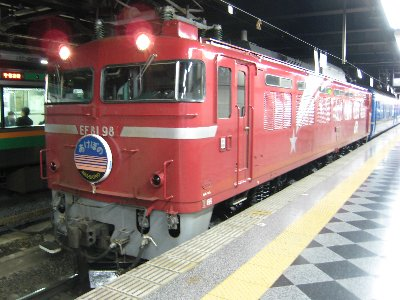
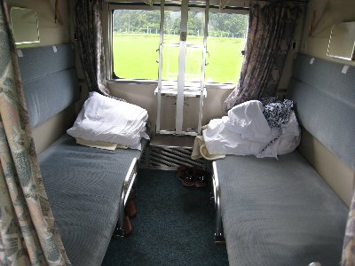
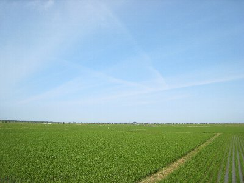
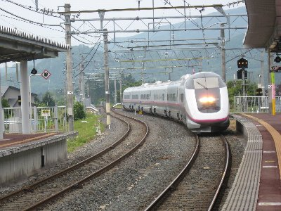

寝台列車に乗ろうよ。 | 2008年6月 |
|---|---|
| 実はこの企画、今年の３月にあったのですが、私が鎖骨を骨折したために、寝台列車の揺れは厳しいかも・・・と、延期になっていたんですが、やっとのやっとで実行出来ました。 寝台列車と言えば、最近では「カシオペア」や「トワイライトエクスプレス」が有名ですが、やっぱり「ブルートレイン」でしょう！ ブルートレインと言っても特定の車両を示すわけではなく、客車が青色だからそう呼んでいて、列車ごとに別名が付いています。「北斗星」や「日本海」「はやぶさ」など等。 しかし、夜に走る寝台列車は特急とは言っても、時間も掛かるし寝台料金が余分に掛かったりして、新幹線路線が出来てきた箇所から、その利便性により廃止に追い込まれているようで、残る寝台特急はあとわずか・・・ 今のうちに乗らなきゃ！ 鉄ちゃん（鉄道マニアの事）友人と路線選びから入りました。短い距離だとすぐ終わって楽しめないし、あまり遠いと観光時間がなくなるので、慎重にチョイスしました | |
|  上野駅にて出発を待つ「あけぼの」 |  同左 後部 |
| しかし、決まったのは決行日5日前！ しかもチケット＆指定席は当日という無謀かも？と言えるスケジュール。 上野発、青森行きの寝台特急「あけぼの」に決定して、お得な「秋田フリーエリア切符」を買おうとしたのですが、これはJR東日本の企画切符らしく、JR東海管轄では購入すら出来ないのです。バカらしい話ですがしょうがない。当日に東京へ行ってから切符を買い、そこで寝台列車の指定席を取るしかないのです。（その切符だと、新幹線「こまち」で行ってもいいし、「あけぼの」のB寝台ソロまで使えるお得な切符なのです） 金曜発の列車だと、混んでいて乗れない可能性が有る為、木曜発にしよう！ って事で木曜の仕事を定時に上り、急いで新幹線で東京へ。 あ、今回は贅沢して新幹線はグリーン車に乗りました。 上野駅で秋田フリーエリア切符を購入し、そのままB寝台ソロの指定を取ろうとすると「満席」。仕方なくB寝台開放の下段で・・・「満席」。結局、B寝台開放上段でした。 寝台はグレードがあり、当然料金も変わってきます。A寝台は個室タイプの良いやつ。B寝台ソロってのは、個室だけどカプセルホテルのように狭い。B寝台開放ってのは、2段ベットで、カーテンだけで仕切られているやつ。この他にもゴロンシートとか、トワイライトエクスプレス等はスイートルームが存在します。 まあ、B寝台開放は昔からのタイプなので、いかにもブルートレイン気分が味わえるので良いですが、木曜発でここまで混むとは・・・・ | |
 B寝台通路部分の椅子を出しくつろぐ友人 |  開放B寝台下部 |
| さて、いよいよ出発！ 演歌の「♪上野発の〜夜行列車〜」ってやつですね。 「あけぼの」の難点はロビーカーが無く、くつろげる場所が無いこと。ベットでは早くも寝てしまう人がいるため騒げない。 通路の収納座席を出し、静かに友人と乾杯。流れる車窓を眺めながら、のんびりした気分を味わいました。 都会を抜けるまでに幾つか駅に止まりますが、とある駅で、ビール飲みながらスルメをかじっていると、窓の外には帰宅途中のリーマン達がホームに並んでいるのが見えました。ああ、ソコにある日常と俺らの非日常・・・・なんて思っていましたが、さすがに観られていると恥ずかしいものがあります。友人にいたっては、JRの浴衣姿ですし。早く出発して欲しい気持ちで一杯でしたね。 さて、列車の中を探索した後は、ゆっくり就寝。揺れて寝付きにくいよと友人は言ったけど、瞬間爆睡でした。 明朝6時過ぎ、もうすぐ秋田のアナウンスが流れ、ごそごそと起き出して朝食用のパンを食べ、車窓を眺め、弘前（青森）までの時間を楽しみました。9:18弘前着。 約11時間半の旅でしたが、寝ている間に東京から青森へ移動するなんて、やっぱ楽しいね。こういう列車は残して欲しいなー | |
|  八郎潟周辺 まさに田んぼと空だけ |  普通のホームに進入する新幹線「こまち」 |
| おまけ 弘前・秋田観光を経て、帰りは新幹線「こまち」で帰郷ですが、これも初体験！ 大体、新幹線が普通〜のホームに入ってきて、両側森の単線をクネクネ走っていくなんて凄いよ！ 窓の外に直ぐ木があるもの。 盛岡から先は、急激に速度が上がり、そのギャップにびっくりしました。 （因みに、帰りの指定席も満席で、危うく立ち席になるところ、なんとかキャンセルが出て座ってこれました | |
| 写真＆コメント ｂｙ べっしー | |